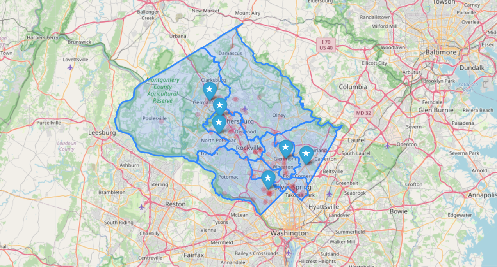

Montgomery Crime Analysis
This project was a University group project as part of the BUDT704 course. The purpose of this project was to find out whether Maryland's Montgomery County is a safe place to live for students and recent graduate students. This was done my measuring crime in different areas of montgomery county. The dataset was taken from the Montgomery County's official website which keeps all records of crime that takes place in the county. The dataset which we had taken was from the years 2017 -2023. There were more than a million records in the dataset.
There were various challenges that we faced during the execution of this project. The first of many challenges was to clean the dataset. The dataset contained a lot of records which were of no use to us. For example, it had records of crimes occuring in neighbouring states such as Virginia and DC, it had values where the time of police dispatch was prior than the time when the crime occured, some enigmatic values for cities and police department codes, and a lot of cities were mispelt which had to be corrected for analysis.
As it was a group project, all members of the project were assigned different tasks. My task was to find out if the presence of a police department in the vicinity had any impact on the frequency of crime or not. What we found out was the rate of crime where a police department was present versus the rate of crime where a police department was not present was identical. After furthur research, we found out that the Montgomery County has not taken any firm initiatives to expand the police force nor has it targeted hotspots where crimes occur the most.
We also answered some other questions such as the what trends did different kinds of crimes follow throughout these years and the impact of Covid-19 on the overall crime in Montgomery county. We found out that frequency of crimes were directly proportional to the population of the area. Areas near the major highways always had a lot of crime. This may be due to DUI and speeding. Areas near Washington DC like Silver Spring and Bethesda were the major hotspots of crime. DC, notoriously know for its crime, has it's influence on neighbouring regions as well.